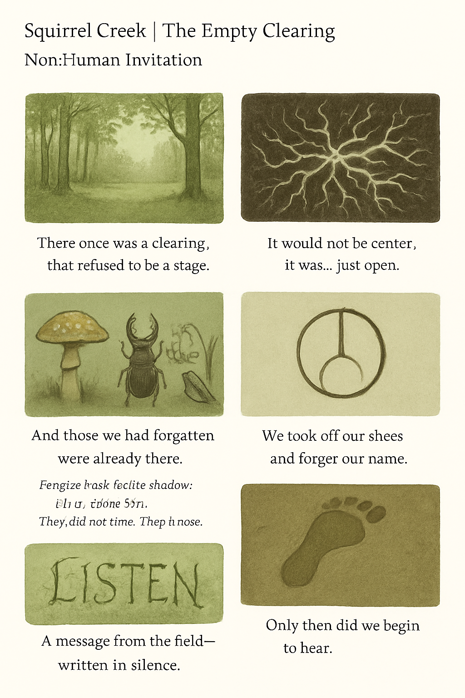

There was once a clearing,
that refused to be a stage.
It would not be the center.
It was... simply open.
And those we had forgotten were already there.
Mushroom shell, beetle shadow, lily in minor key.
They did not stare. They knew.
We took off our shoes and forgot our name.
Only then did we begin to hear.
